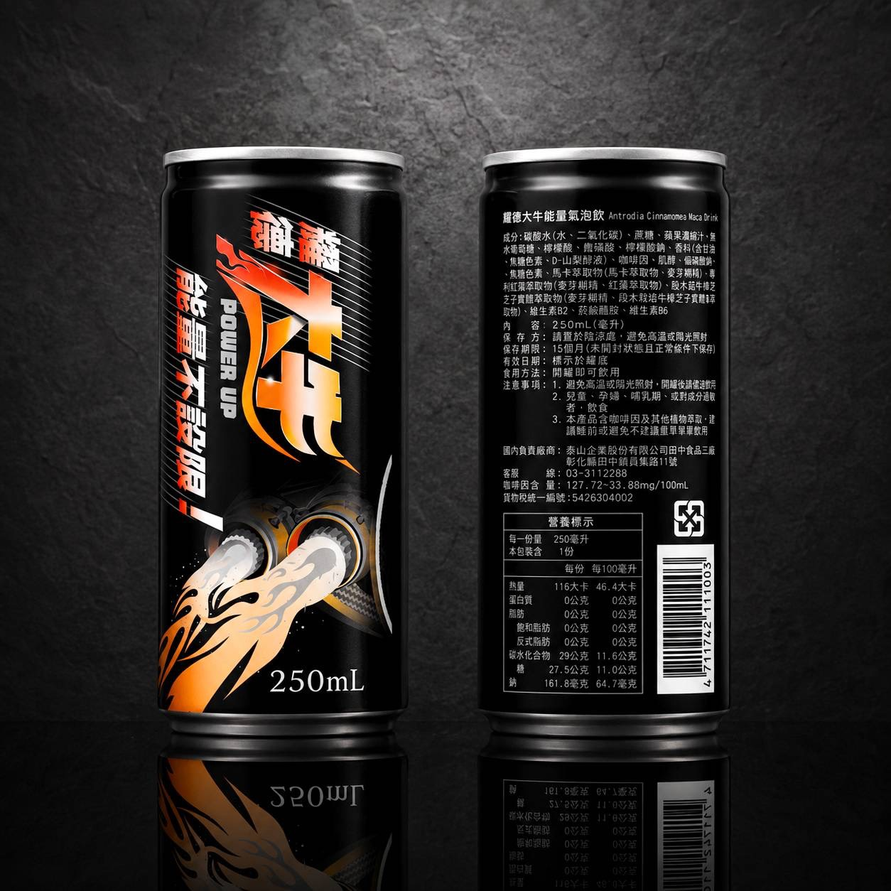
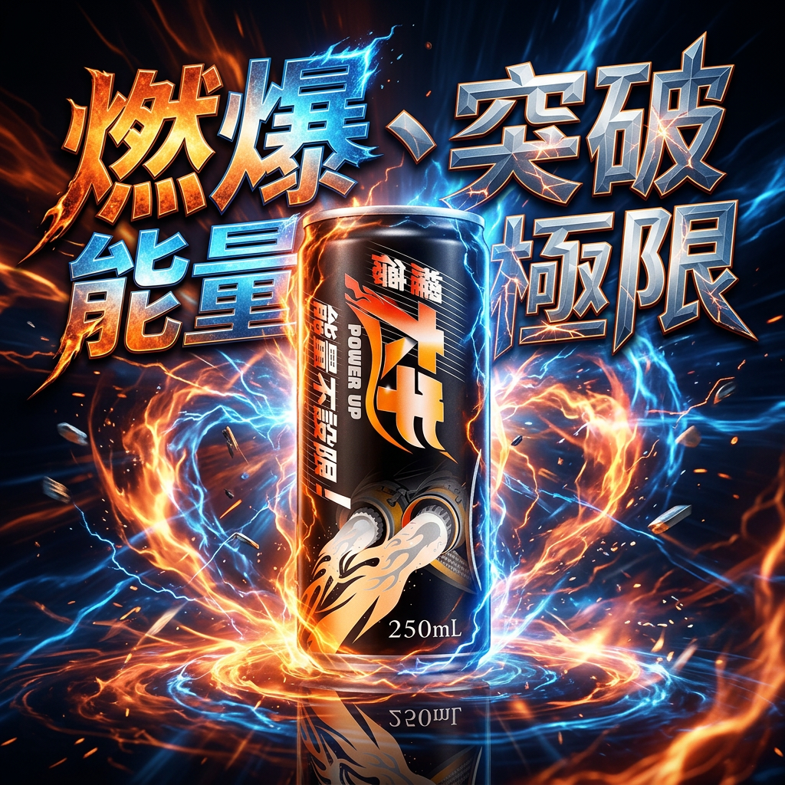
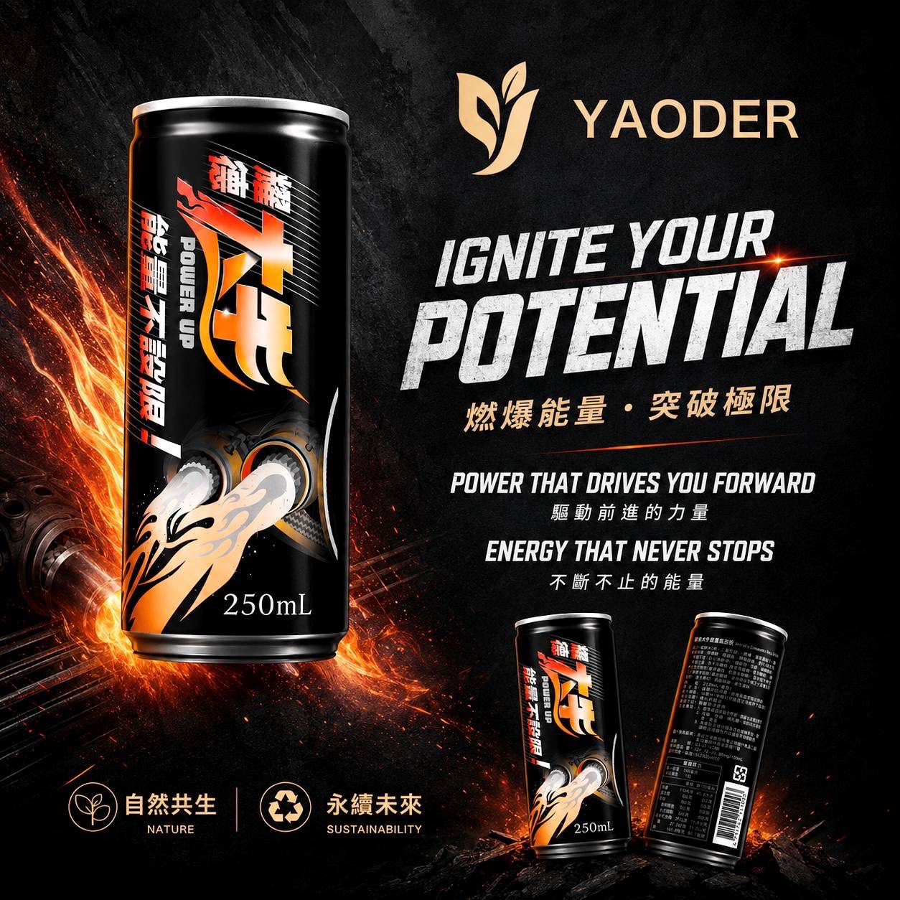

為什麼選擇耀德大牛？
三秒看懂核心差異 — 不只是能量飲，更是牛樟芝日常保健的新選擇。
燃爆能量
馬卡萃取物搭配牛磺酸與咖啡因，支援身體代謝與精神集中，突破日常疲勞瓶頸。
牛樟芝守護
使用段木栽培牛樟芝子實體萃取粉，富含三萜類與多醣體，為日常保健加一層科學防護。
開罐即飲
250ml 隨身罐裝，氣泡清爽口感。運動前後、開會前、長途駕駛，隨時補充零負擔。
怎麼喝？
簡單三步，融入你的日常節奏。
冰鎮更好喝
建議冷藏後飲用，氣泡口感更清爽。常溫亦可，開罐前輕搖均勻。
需要能量時
運動前 30 分鐘、下午疲倦時、或長途開車前，一罐補充活力。
每日 1 罐
建議每日不超過一罐。含咖啡因，孕婦、兒童及敏感者請謹慎飲用。
關鍵成分
每一口，都是科研與天然的精心配比。
段木栽培牛樟芝子實體
耀德核心原料，模擬野生生長環境段木栽培，子實體萃取完整保留三萜類（Triterpenoids）與多醣體（Polysaccharides）活性物質。
馬卡萃取物
源自秘魯安地斯山的高原能量植物，傳統上用於增強體力與耐力，是現代能量飲品的天然活力來源。
專利紅參萃取物
經專利工藝萃取的紅參活性成分，支援身體代謝與日常活力維持，與牛樟芝相輔相成。
牛磺酸 + 維生素 B 群
牛磺酸支援運動表現，維生素 B2、B6 與菸鹼醯胺參與能量代謝，幫助身體更有效運用營養。
成分：
碳酸水（水、二氧化碳）、蔗糖、蘋果濃縮汁、無水葡萄糖、檸檬酸、牛磺酸、檸檬酸鈉、香料（含甘油、焦糖色素、D－山梨醇液）、咖啡因、肌醇、偏磷酸鈉、焦糖色素、馬卡萃取物（馬卡萃取物、麥芽糊精）、專利紅參萃取物（麥芽糊精、紅參萃取物）、段木栽培牛樟芝子實體萃取粉（麥芽糊精、段木栽培牛樟芝子實體萃取物）、維生素 B2、菸鹼醯胺、維生素 B6
共線過敏原：該產線亦生產含麩質之穀物及其製品
| 規格 | 250ml × 24入 |
| 咖啡因含量 | 27.72～33.88 mg / 100ml |
| 保存期限 | 常溫下 15 個月（未開封） |
| 原產地 | 台灣 |
| 每份 | 每 100 毫升 | |
|---|---|---|
| 每一份量 250 毫升 · 本包裝含 1 份 | ||
| 熱量 | 116 大卡 | 46.4 大卡 |
| 蛋白質 | 0 公克 | 0 公克 |
| 脂肪 | 0 公克 | 0 公克 |
| 碳水化合物 | 29 公克 | 11.6 公克 |
| 糖 | 27.5 公克 | 11.0 公克 |
| 鈉 | 161.8 毫克 | 64.7 毫克 |
- 避免高溫或陽光照射，開罐後請儘速飲用完畢
- 嬰幼兒、孕婦、哺餵母乳者，如欲食用本產品，請洽詢醫師或醫療專業人員
- 含咖啡因，請留意每日攝取量，孕婦、兒童及對咖啡因敏感者請謹慎飲用
- 本產品為食品，非藥物，不得宣稱治療或預防任何疾病
| 國內負責廠商 | 耀德植硏生醫股份有限公司 桃園巿蘆竹區安中街 36 巷 6 號 4 樓 03-3112288 |
| 製造廠商 | 泰山企業股份有限公司田中食品三廠 彰化縣田中鎮興工路 11 號 |
| 貨物稅統一編號 | 5426304002 |
科研依據
20 年牛樟芝研究積累，多項成果發表於國際 SCI 期刊。
耀德團隊針對段木栽培牛樟芝子實體進行活性成分分析，確認三萜類與多醣體含量符合高標準規格，為產品配方提供科學基礎。
相關研究發表於 SCI 國際學術期刊每批次產品均通過 SGS 國際檢驗，確保無農藥殘留、無重金屬污染，讓消費者喝得安心。
SGS 檢驗報告 · 農藥殘留 365 項未檢出委託 GMP 認證食品工廠製造，從原料入庫到成品出廠，全程品質管控符合良好製造規範。
ISO 22000 食品安全管理系統認證飲用前 vs 飲用後
真實使用者回饋的常見改變（個人體質不同，效果因人而異）。
- 下午容易疲倦想睡
- 運動後恢復較慢
- 開會難以集中精神
- 依賴含糖手搖飲提神
- 下午精神穩定、不易崩潰
- 運動前後補充更順手
- 專注力提升，效率更好
- 健康替代含糖飲品
使用者見證
來自真實購買者的評價，支援星等篩選與排序。
常見問題
還有疑問？這裡可能有你要的答案。
搭配推薦
依你的保健需求，打造個人化組合。